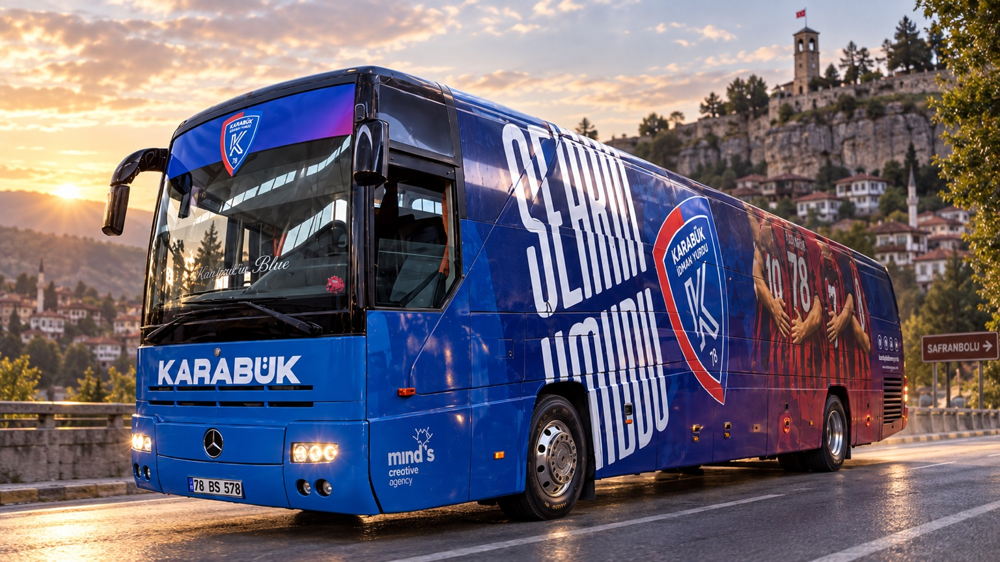

Uzaktan güçlü okuma
Büyük ölçekli “Şehrin Takımı” tipografisi, kulüp arması ve kırmızı–lacivert bloklar aracın ana siluetine göre konumlandırıldı.
Kulübün kırmızı–lacivert kimliğini, armasını, güçlü tipografisini ve futbolcu görsellerini otobüsün geniş yüzeylerine taşıyan büyük format kaplama çalışması. Tasarım; uzaktan okunabilirlik, gövde panelleri arasındaki devamlılık ve aracın farklı açılardan tek bir görsel sistem gibi algılanması gözetilerek kurgulandı.
← Tasarım İşlerine Dön
Otobüsün ön, yan ve arka yüzeyleri birbirinden bağımsız afişler gibi değil; hareket halindeyken de devam eden tek bir marka yüzeyi olarak ele alındı.
Büyük ölçekli “Şehrin Takımı” tipografisi, kulüp arması ve kırmızı–lacivert bloklar aracın ana siluetine göre konumlandırıldı.
Kapı, bagaj kapağı, teker ve gövde birleşimleri hesaba katılarak görsel dil farklı yüzeylerde kesintisiz devam edecek şekilde kuruldu.
Takım renkleri, arma, futbolcu görselleri ve şehir vurgusu; sahada olduğu kadar yolda da kulübü tanınır kılan bir bütünlükte kullanıldı.
Genel görünüm, tipografi, arma kullanımı ve kaplama detaylarını incelemek için görsellere dokun.